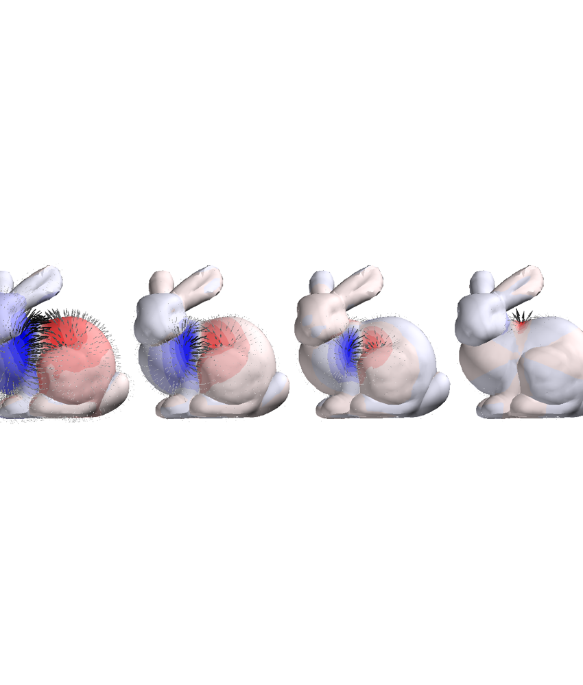
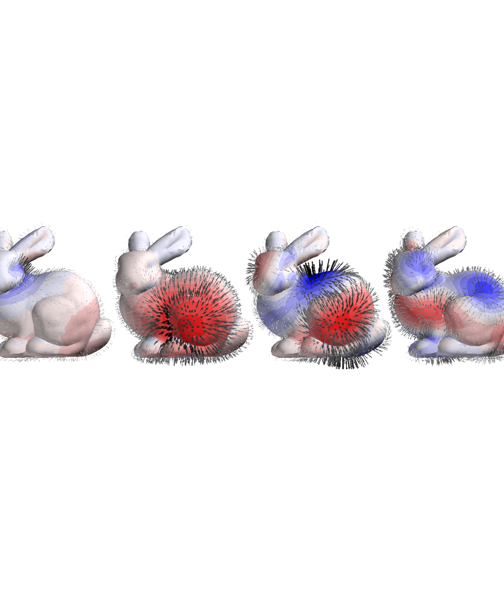

Note
Click here to download the full example code
Compare SUH and SPH basis functions for the magnetic field¶
import numpy as np
import matplotlib.pyplot as plt
from mayavi import mlab
import trimesh
import pkg_resources
from pyface.api import GUI
_gui = GUI()
from bfieldtools.mesh_magnetics import magnetic_field_coupling
from bfieldtools.mesh_magnetics import magnetic_field_coupling_analytic
from bfieldtools.mesh_magnetics import scalar_potential_coupling
from bfieldtools.sphtools import compute_sphcoeffs_mesh, basis_fields
from bfieldtools.suhtools import SuhBasis
from bfieldtools.utils import load_example_mesh
mesh = load_example_mesh("bunny_repaired")
mesh.vertices -= mesh.vertices.mean(axis=0)
mesh_field = mesh.copy()
mesh_field.vertices += 0.005 * mesh_field.vertex_normals
mesh_field = trimesh.smoothing.filter_laplacian(mesh_field, iterations=1)
Ca, Cb = basis_fields(mesh_field.vertices, 4)
bsuh = SuhBasis(mesh, 25)
Csuh = magnetic_field_coupling_analytic(mesh, mesh_field.vertices) @ bsuh.basis
Out:
Calculating surface harmonics expansion...
Computing the laplacian matrix...
Computing the mass matrix...
Closed mesh or Neumann BC, leaving out the constant component
Computing magnetic field coupling matrix analytically, 2503 vertices by 2503 target points... took 8.26 seconds.
def plot_basis_fields(C, comps):
d = 0.17
i = 0
j = 0
for n in comps:
p = 1.05 * mesh_field.vertices.copy()
p2 = mesh_field.vertices.copy()
# p[:,1] -= i*d
# p2[:,1] -= i*d
p[:, 0] += i * d
p2[:, 0] += i * d
m = np.max(np.linalg.norm(C[:, :, n], axis=0))
vectors = mlab.quiver3d(
*p.T, *C[:, :, n].T, mode="arrow", colormap="Greys", vmin=0, vmax=m
)
vectors.glyph.mask_input_points = True
vectors.glyph.mask_points.maximum_number_of_points = 1800
vectors.glyph.mask_points.random_mode_type = 1
vectors.glyph.glyph_source.glyph_position = "center"
vectors.glyph.glyph_source.glyph_source.shaft_radius = 0.02
vectors.glyph.glyph_source.glyph_source.tip_radius = 0.06
vectors.glyph.glyph.scale_factor = 0.03
# m = np.max(abs((C[:,:,n].T*mesh_field.vertex_normals.T).sum(axis=0)))
# s =mlab.triangular_mesh(*p.T, mesh_field.faces,
# scalars=(C[:,:,n].T*mesh_field.vertex_normals.T).sum(axis=0),
# colormap='seismic', vmin=-m, vmax=m, opacity=0.7)
# s.actor.property.backface_culling = True
m = np.max(abs((C[:, :, n].T * mesh_field.vertex_normals.T).sum(axis=0)))
s = mlab.triangular_mesh(
*p2.T,
mesh.faces,
scalars=(C[:, :, n].T * mesh_field.vertex_normals.T).sum(axis=0),
colormap="bwr",
vmin=-m,
vmax=m
)
s.actor.mapper.interpolate_scalars_before_mapping = True
s.module_manager.scalar_lut_manager.number_of_colors = 15
i += 1
comps = [0, 4, 10, 15]
scene = mlab.figure(bgcolor=(1, 1, 1), size=(1200, 350))
plot_basis_fields(Ca, comps)
scene.scene.parallel_projection = True
scene.scene.z_plus_view()
scene.scene.camera.zoom(4)
while scene.scene.light_manager is None:
_gui.process_events()
scene.scene.light_manager.lights[2].intensity = 0.2
scene = mlab.figure(bgcolor=(1, 1, 1), size=(1200, 350))
plot_basis_fields(Csuh, comps)
scene.scene.parallel_projection = True
scene.scene.z_plus_view()
scene.scene.camera.zoom(4)
while scene.scene.light_manager is None:
_gui.process_events()
scene.scene.light_manager.lights[2].intensity = 0.2
- 
- 
- from bfieldtools.mesh_magnetics import scalar_potential_coupling
scaling_factor = 0.02
- #Load simple plane mesh that is centered on the origin
file_obj=pkg_resources.resource_filename(‘bfieldtools’, ‘example_meshes/10x10_plane_hires.obj’) plane = trimesh.load(file_obj=file_obj, process=False) plane.apply_scale(scaling_factor)
- # Rotate to x-plane
t = np.eye(4) t[1:3,1:3] = np.array([[0,1],[-1,0]]) plane.apply_transform(t) plane = plane.subdivide()
u = scalar_potential_coupling(mesh, plane.vertices, multiply_coeff=False) mask = 1 + np.sum(u, axis=1)/(4*np.pi) mask[mask < 1e-6] = 0
Ca, Cb = basis_fields(plane.vertices, 6) bsuh = SuhBasis(mesh, 48) CB = magnetic_field_coupling_analytic(mesh, plane.vertices) Csuh = CB @ bsuh.basis
A,B = compute_sphcoeffs_mesh(mesh, 6) b1 = np.einsum(‘ij,lik->lkj’, A , Ca) # Mapping from verts to alpha to field b2 = np.einsum(‘ij,klj->lki’, bsuh.mass @ bsuh.basis , Csuh) # Mapping from verts to suh to field
ind=1932 scalars = np.zeros(mesh.vertices.shape[0]) scalars[ind] = 1 mlab.triangular_mesh(*mesh.vertices.T, mesh.faces, scalars=scalars, colormap=’Blues’) surf= mlab.triangular_mesh(*plane.vertices.T, plane.faces, colormap=’viridis’,
scalars = mask*np.linalg.norm(CB[:,:,ind], axis=1))
surf.actor.mapper.interpolate_scalars_before_mapping = True surf.module_manager.scalar_lut_manager.number_of_colors = 16
mlab.figure() mlab.triangular_mesh(*mesh.vertices.T, mesh.faces, scalars=scalars, colormap=’Blues’) surf = mlab.triangular_mesh(*plane.vertices.T, plane.faces, colormap=’viridis’,
scalars = mask*np.linalg.norm(b1[:,:,ind], axis=0))
surf.actor.mapper.interpolate_scalars_before_mapping = True surf.module_manager.scalar_lut_manager.number_of_colors = 16
mlab.figure() mlab.triangular_mesh(*mesh.vertices.T, mesh.faces, scalars=scalars, colormap=’Blues’) surf = mlab.triangular_mesh(*plane.vertices.T, plane.faces, colormap=’viridis’,
scalars = mask*np.linalg.norm(b2[:,:,ind], axis=0))
surf.actor.mapper.interpolate_scalars_before_mapping = True surf.module_manager.scalar_lut_manager.number_of_colors = 16
Total running time of the script: ( 0 minutes 27.222 seconds)
Estimated memory usage: 792 MB